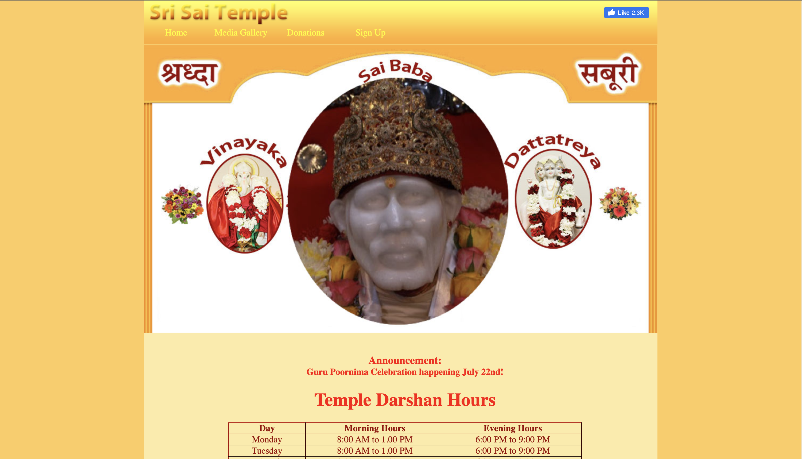

Sri Sai Temple Inc | July 2024 – Present
Maintained and updated the temple's website to ensure accurate and real-time information.
Blumetra Solutions | May 2024 – October 2024
Developed interactive tools for business workflows using Python, Google Cloud APIs, and JavaScript.
Headstarter | July 2024 – September 2024
Built an inventory management system with full CRUD operations using Python and Django.

Icario | June 2022 – August 2022
Optimized data operations in AWS, Redshift, and Aurora Postgres for health communication systems.
San Jose State University | September 2024 – Present
Conducted research on responsible computing practices and ethical AI applications.
San Jose Consulting Group | October 2024 – Present
Consulted for Tallyrus to enhance their AI Essay Grader by improving accuracy and user experience.

Responsible Computing Club (RCC) at SJSU | August 2024 – Present
Led a team of 8 to strategize, develop, and implement an AI Case Competition to engage students in solving real-world challenges. Collaborated with Mozilla to establish the SJSU Mozilla Chapter, promoting ethical AI practices and responsible technology development.
Spartan Analytics | September 2024 – Present
Organized speaker panels, social events, and programming workshops, fostering connections between members and industry professionals while enhancing learning opportunities.
The STEAM Foundation | December 2022 – Present
Promoted STEAM education globally by providing schools in Nicaragua and Vietnam with equipment, curriculum, and training. Guided Vietnamese students to clean local beaches by designing and 3D-printing trash grabber tools.
Theta Tau | December 2023 – May 2024
Led professional development events, including mock interviews and networking sessions with companies like Intel and Nokia, fostering career readiness among members.
Theta Tau | September 2023 – December 2023
Managed and mentored a pledge class of 17 members, fostering professionalism and a strong sense of community through structured meetings and team-building activities.
Dougherty Valley High School Speech and Debate Team | August 2022 – June 2023
Directed the middle school Bridge program with over 70 students. Provided logistics and mentorship to participants while coordinating efforts with parents and mentors at tournaments.
Dougherty Valley High School Speech and Debate Team | August 2021 – June 2022
Coached novice competitors, led team meetings for varsity members, and organized drills, resulting in top placements in regional and national tournaments.
The STEAM Foundation | August 2021 – December 2022
Developed and managed 3D printing camps, recruited instructors, and ensured smooth program operations through regular check-ins and parent communication.
Gurus Education | June 2023 – August 2023
Conducted public speaking and debate sessions for students, fostering confidence and effective communication skills in a supportive environment.